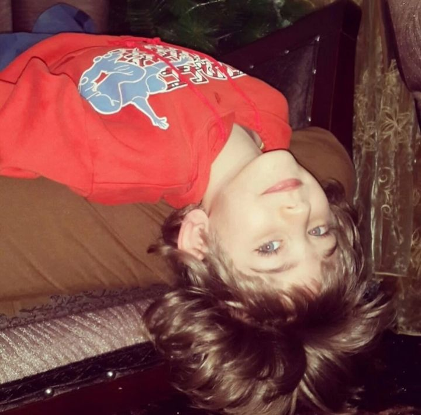
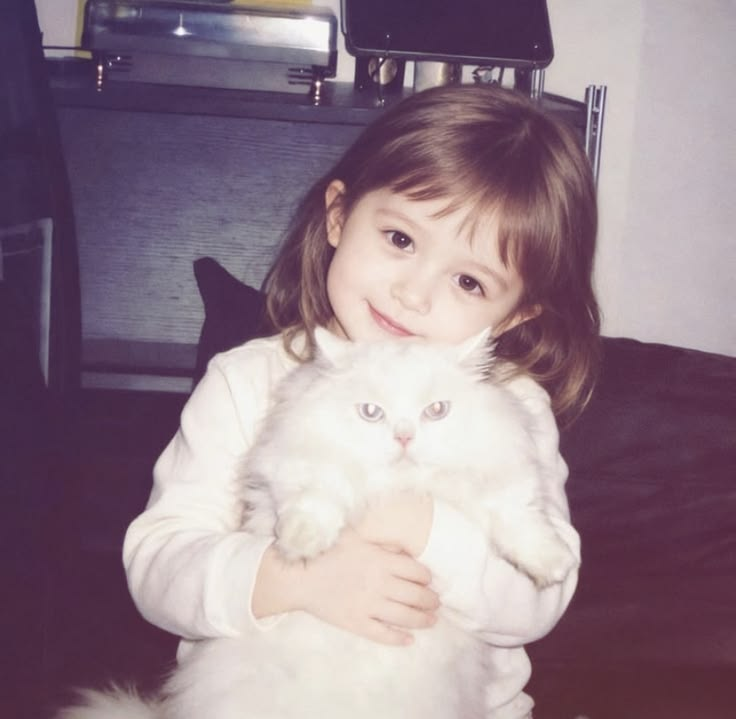
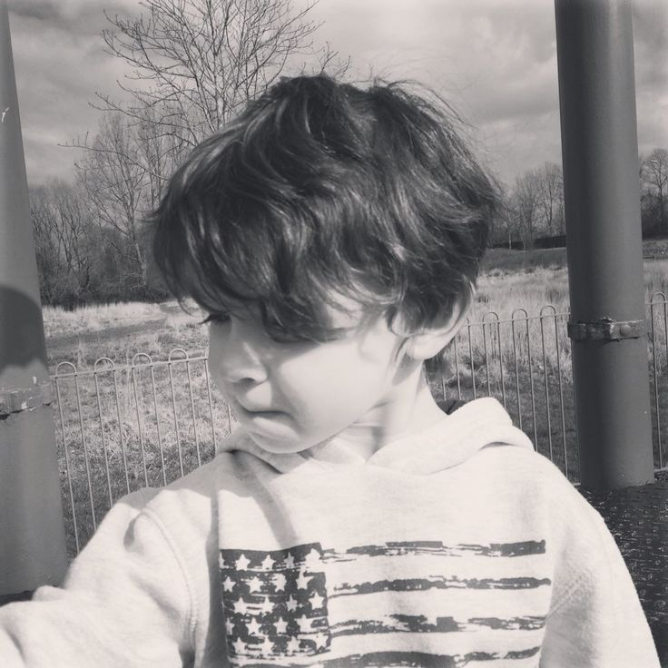
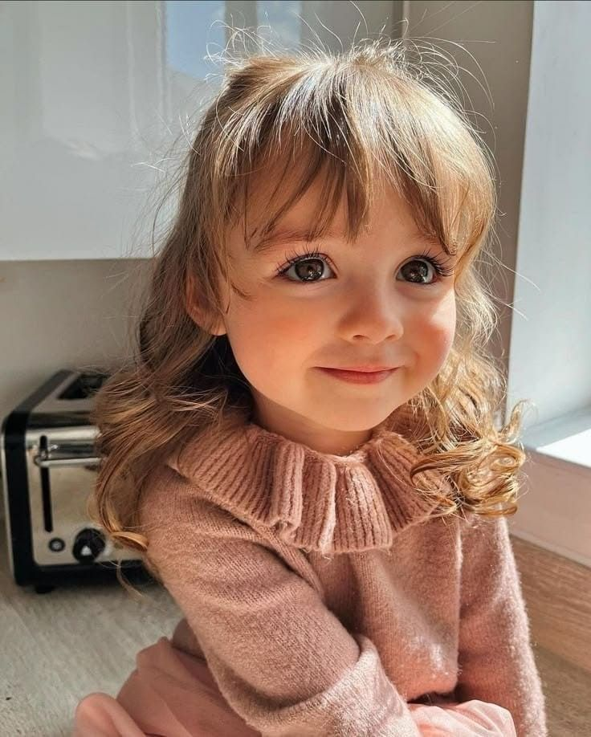
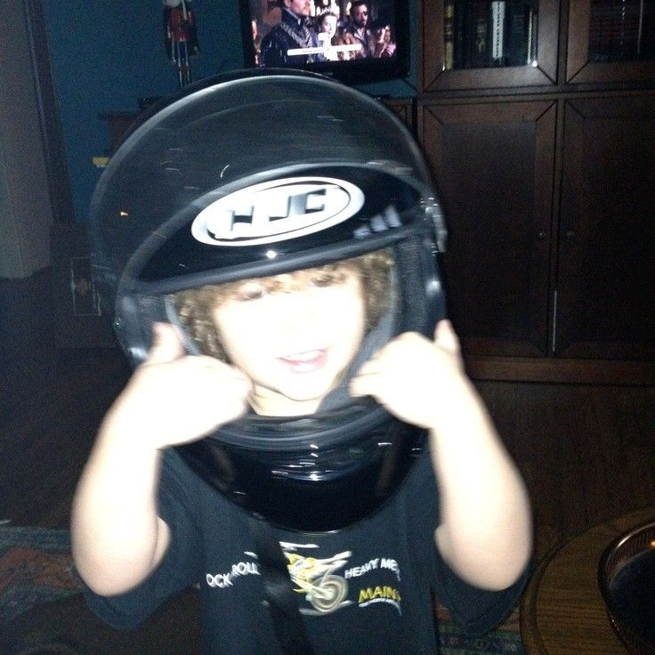
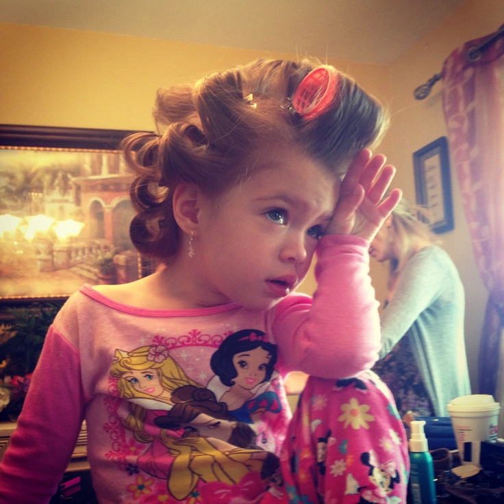
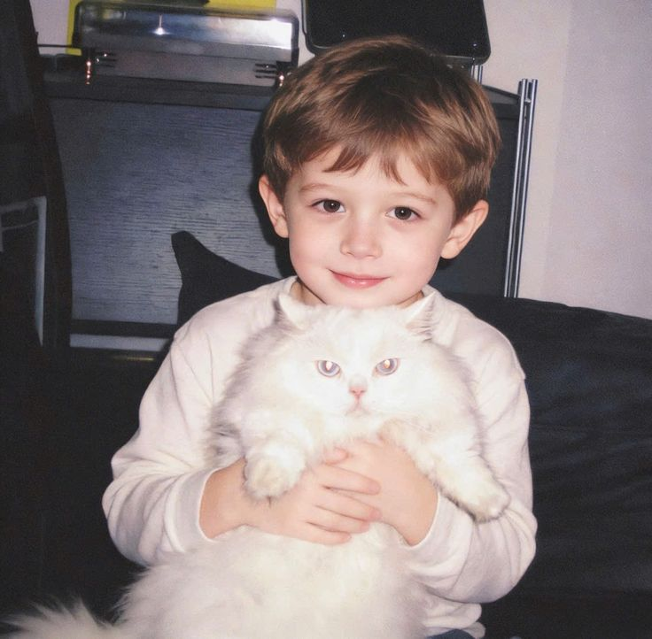

Penggunaan CSS Flexbox pada galeri foto mempermudah dalam mengatur tata letak gambar menjadi rapi dan fleksibel. Dengan properti flex-wrap, gambar dapat otomatis berpindah ke baris berikutnya ketika ruang tidak mencukupi. Selain itu, penggunaan justify-content membantu mengatur posisi gambar agar berada di tengah, dan gap memberikan jarak antar gambar sehingga tampilan galeri menjadi lebih teratur dan menarik.